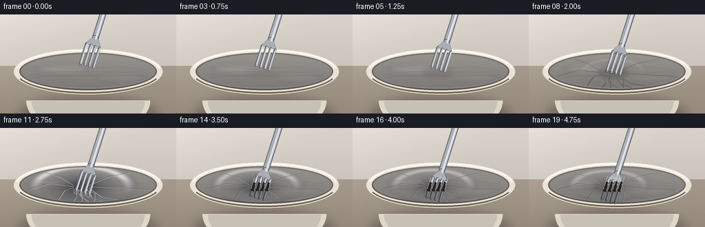
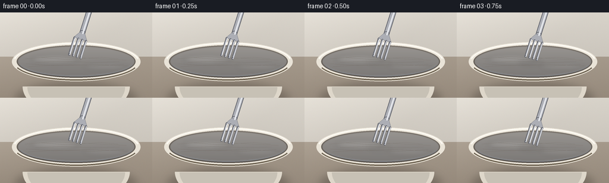

CODING AGENTS AS PIXEL WORLD MODELS
traex/Seed-2.1-Pro-0915 · phygen_023
点击播放 · 原生 RGB 像素
逐轮保存的候选
回放视频、检查图与代码变化。
每份候选均可单独播放。实际图片检查记录在下方工具轨迹中。
候选 01播放与检查图
点击播放 · 原生 RGB 像素


展开代码变化
--- 上一保存版本
+++ 本次保存版本
@@ -0,0 +1,425 @@
+"""Procedural t2v clip: a fork slowly pressing into tensed plastic wrap.
+
+Renders 20 frames of 256x144 RGB at 4 fps with PIL/numpy only. The scene is a
+bowl seen from a slight high angle, cling film tensed across its rim, and a
+metal fork slowly descending: the film dimples, tension wrinkles radiate from
+the contact, then the four tines puncture the outer layer and sink through.
+"""
+import json
+import math
+from pathlib import Path
+
+import numpy as np
+from PIL import Image, ImageDraw, ImageFilter
+
+import artifact_io
+
+CASE_DIR = Path(__file__).parent
+SPEC = json.loads((CASE_DIR / "task_spec.json").read_text())
+W, H = SPEC["width"], SPEC["height"]
+N, FPS = SPEC["frames"], SPEC["fps"]
+S = 3 # supersampling factor
+SW, SH = W * S, H * S
+
+# ---------------------------------------------------------------- geometry
+# Fork axis: tines point down-left, handle runs up-right.
+AX = -0.30
+AY = math.sqrt(1.0 - AX * AX)
+U = (AX, AY) # toward tine tips
+NORM = (AY, -AX) # across the tines
+
+C_X, C_Y = 128.0, 83.0 # bowl rim centre
+RIM_RX, RIM_RY = 108.0, 33.0
+INNER_RX, INNER_RY = 98.0, 25.5
+PLANE_Y = 84.0
+
+TINE_LEN = 30.0
+TINE_W = 3.3
+TINE_PITCH = 6.6
+PUNCTURE_AT = 11.0 # press depth that breaks film
+
+
+def press_at(f):
+ """How far tine tips are past the resting film plane (negative = above)."""
+ keys_f = [0, 4, 7, 9, 11, 14, 19]
+ keys_p = [-10.0, -6.0, -1.0, 4.0, 11.0, 17.0, 22.0]
+ return float(np.interp(f, keys_f, keys_p))
+
+
+# ---------------------------------------------------------------- helpers
+def sc(v):
+ return v * S
+
+
+def pt(p):
+ return (p[0] * S, p[1] * S)
+
+
+def capsule(layer, p0, p1, w, fill, outline=None, ow=1.0):
+ """Rounded capsule in *final* pixel coordinates on an SS-sized layer."""
+ d = ImageDraw.Draw(layer)
+ x0, y0, x1, y1 = p0[0], p0[1], p1[0], p1[1]
+ dx, dy = x1 - x0, y1 - y0
+ L = math.hypot(dx, dy) or 1.0
+ nx, ny = -dy / L * w / 2, dx / L * w / 2
+ poly = [(x0 + nx, y0 + ny), (x1 + nx, y1 + ny),
+ (x1 - nx, y1 - ny), (x0 - nx, y0 - ny)]
+ kw = {}
+ if outline is not None:
+ kw["outline"] = outline
+ kw["width"] = max(1, int(round(ow * S)))
+ d.polygon([pt(q) for q in poly], fill=fill, **kw)
+ r = w / 2
+ for q in (p0, p1):
+ box = [sc(q[0] - r), sc(q[1] - r), sc(q[0] + r), sc(q[1] + r)]
+ d.ellipse(box, fill=fill, **kw)
+
+
+def line(layer, points, w, fill, joint="curve"):
+ ImageDraw.Draw(layer).line([pt(p) for p in points], fill=fill,
+ width=max(1, int(round(w * S))), joint=joint)
+
+
+# ---------------------------------------------------------------- textures
+def make_background():
+ yy = np.linspace(0, 1, SH)[:, None]
+ wall_top = np.array([216, 211, 202.0])
+ wall_bot = np.array([191, 185, 176.0])
+ ctop = np.array([181, 170, 156.0])
+ cbot = np.array([150, 138, 124.0])
+ wall = wall_top * (1 - yy) + wall_bot * yy
+ ctr = ctop * (1 - yy) + cbot * yy
+ split = int(0.52 * SH)
+ bg = np.zeros((SH, SW, 3))
+ bg[:split] = wall[:split, None, :]
+ bg[split:] = ctr[split:, None, :]
+ xx = np.linspace(0, 1, SW)[None, :]
+ glow = np.clip(1 - (xx * 1.1 + yy * 0.9), 0, 1) * 14
+ bg += glow[..., None]
+ rng = np.random.default_rng(3)
+ bg += rng.normal(0, 1.1, bg.shape)
+ img = Image.fromarray(np.clip(bg, 0, 255).astype(np.uint8), "RGB")
+ sh = Image.new("RGBA", (SW, SH), (0, 0, 0, 0))
+ d = ImageDraw.Draw(sh)
+ d.ellipse([sc(26), sc(118), sc(230), sc(176)], fill=(40, 34, 28, 70))
+ sh = sh.filter(ImageFilter.GaussianBlur(sc(7)))
+ return Image.alpha_composite(img.convert("RGBA"), sh)
+
+
+def make_interior_grad():
+ grad = np.zeros((int(sc(INNER_RY * 2 + 4)), int(sc(INNER_RX * 2 + 4)), 4))
+ t = np.linspace(0, 1, grad.shape[0])[:, None]
+ col = (np.array([126, 119, 111.0]) * (1 - t) + np.array([86, 80, 74.0]) * t)
+ grad[..., :3] = col[:, None, :]
+ grad[..., 3] = 255
+ grad_img = Image.fromarray(grad.astype(np.uint8), "RGBA")
+ mask = Image.new("L", grad_img.size, 0)
+ ImageDraw.Draw(mask).ellipse([0, 0, grad_img.size[0] - 1,
+ grad_img.size[1] - 1], fill=255)
+ x0, y0 = sc(C_X - INNER_RX - 2), sc(C_Y - INNER_RY - 2)
+ return grad_img, mask, (int(x0), int(y0))
+
+
+INTERIOR = make_interior_grad()
+
+
+def draw_bowl(base):
+ d = ImageDraw.Draw(base)
+ d.chord([sc(38), sc(74), sc(218), sc(176)], 0, 180, fill=(222, 215, 202, 255))
+ shade = Image.new("RGBA", (SW, SH), (0, 0, 0, 0))
+ ds = ImageDraw.Draw(shade)
+ ds.chord([sc(46), sc(80), sc(210), sc(172)], 0, 180, fill=(0, 0, 0, 26))
+ ds.arc([sc(38), sc(74), sc(218), sc(176)], 25, 150, fill=(0, 0, 0, 45),
+ width=max(1, int(round(sc(2)))))
+ base.alpha_composite(shade)
+
+ d.ellipse([sc(C_X - RIM_RX), sc(C_Y - RIM_RY),
+ sc(C_X + RIM_RX), sc(C_Y + RIM_RY)],
+ fill=(233, 227, 215, 255))
+ d.ellipse([sc(C_X - INNER_RX), sc(C_Y - INNER_RY),
+ sc(C_X + INNER_RX), sc(C_Y + INNER_RY)],
+ fill=(112, 106, 99, 255))
+ grad_img, mask, pos = INTERIOR
+ base.paste(grad_img, pos, mask)
+ d = ImageDraw.Draw(base)
+ d.arc([sc(C_X - INNER_RX), sc(C_Y - INNER_RY),
+ sc(C_X + INNER_RX), sc(C_Y + INNER_RY)],
+ 15, 165, fill=(40, 36, 32, 90), width=max(1, int(round(sc(2.4)))))
+ d.arc([sc(C_X - RIM_RX + 2), sc(C_Y - RIM_RY + 1),
+ sc(C_X + RIM_RX - 2), sc(C_Y + RIM_RY - 1)],
+ 190, 350, fill=(255, 252, 244, 150), width=max(1, int(round(sc(2.2)))))
+ d.arc([sc(C_X - RIM_RX + 2), sc(C_Y - RIM_RY + 1),
+ sc(C_X + RIM_RX - 2), sc(C_Y + RIM_RY - 1)],
+ 20, 160, fill=(120, 108, 92, 120), width=max(1, int(round(sc(2.6)))))
+ return base
+
+
+# ------------------------------------------------------------- film sprites
+def make_dimple_sprite():
+ w, h = 150, 90
+ yy, xx = np.mgrid[-1:1:h * 1j, -1:1:w * 1j]
+ r = np.sqrt((xx / 0.85) ** 2 + (yy / 0.62) ** 2)
+ rgba = np.zeros((h, w, 4))
+ deep = np.exp(-(r ** 2) / 0.22)
+ rgba[..., 0] = 46
+ rgba[..., 1] = 50
+ rgba[..., 2] = 60
+ rgba[..., 3] = deep * 150
+ rim = np.exp(-((r - 0.82) ** 2) / 0.018)
+ upper = rim * np.clip(-yy * 1.6 + 0.6, 0, 1)
+ lower = rim * np.clip(yy * 1.8, 0, 1)
+ rgba[..., :3] = rgba[..., :3] * (1 - upper[..., None]) + \
+ np.array([255, 255, 255]) * upper[..., None]
+ rgba[..., 3] = np.maximum(rgba[..., 3], upper * 150)
+ low = np.zeros_like(rgba)
+ low[..., :3] = 30, 34, 42
+ low[..., 3] = lower * 70
+ out = np.zeros((h, w, 4))
+ m = rgba[..., 3] > 0
+ out[m] = rgba[m]
+ m2 = low[..., 3] > 0
+ out[m2] = np.maximum(out[m2], low[m2])
+ return Image.fromarray(out.astype(np.uint8), "RGBA")
+
+
+def make_dot_sprite():
+ w = h = 22
+ yy, xx = np.mgrid[-1:1:h * 1j, -1:1:w * 1j]
+ r = np.sqrt(xx ** 2 + yy ** 2)
+ a = np.clip(1 - r, 0, 1) ** 1.6
+ rgba = np.zeros((h, w, 4))
+ rgba[..., :3] = 255
+ rgba[..., 3] = a * 230
+ return Image.fromarray(rgba.astype(np.uint8), "RGBA")
+
+
+DIMPLE = make_dimple_sprite()
+DOT = make_dot_sprite()
+
+_rng = np.random.default_rng(7)
+
+
+def build_tension_wrinkles():
+ cx, cy = 118.0, 85.0
+ angles = np.linspace(math.radians(196), math.radians(-16), 11)
+ wr = []
+ for a in angles:
+ dx, dy = math.cos(a), math.sin(a)
+ t = 1.0 / math.sqrt((dx / INNER_RX) ** 2 + (dy / INNER_RY) ** 2)
+ start = (cx + dx * 12, cy + dy * 5)
+ end = (C_X + dx * t * 0.94, C_Y + dy * t * 0.94)
+ bend = _rng.uniform(-9, 9)
+ mid = ((start[0] + end[0]) / 2 - dy * bend,
+ (start[1] + end[1]) / 2 + dx * bend)
+ wr.append((start, mid, end))
+ return wr
+
+
+TENSION = build_tension_wrinkles()
+
+STATIC = [
+ [(42, 78), (86, 74.5), (150, 77), (212, 80.5)],
+ [(48, 91), (96, 88.5), (158, 90), (208, 87.5)],
+ [(60, 84), (104, 82), (160, 84.5), (200, 83)],
+ [(44, 86.5), (90, 89.5), (150, 87), (214, 90)],
+ [(70, 76), (112, 79), (170, 75.5), (198, 78)],
+]
+
+
+def film_mask():
+ m = Image.new("L", (SW, SH), 0)
+ ImageDraw.Draw(m).ellipse(
+ [sc(C_X - INNER_RX), sc(C_Y - INNER_RY),
+ sc(C_X + INNER_RX), sc(C_Y + INNER_RY)], fill=255)
+ return m.filter(ImageFilter.GaussianBlur(sc(0.6)))
+
+
+MASK = film_mask()
+
+
+def draw_wrinkles(layer, alpha):
+ for a, b, c in TENSION:
+ pts = a, b, c
+ line(layer, [(p[0] - 0.5, p[1] - 0.6) for p in pts], 0.7,
+ (66, 72, 82, int(alpha * 110)))
+ line(layer, pts, 0.8, (255, 255, 255, int(alpha * 165)))
+
+
+def draw_static_wrinkles(layer):
+ for pts in STATIC:
+ line(layer, pts, 0.7, (255, 255, 255, 34))
+
+
+def make_film_layer(press, tip_mid, tips, punctured):
+ layer = Image.new("RGBA", (SW, SH), (0, 0, 0, 0))
+ d = ImageDraw.Draw(layer)
+ d.ellipse([sc(C_X - INNER_RX), sc(C_Y - INNER_RY),
+ sc(C_X + INNER_RX), sc(C_Y + INNER_RY)],
+ fill=(230, 237, 246, 64))
+
+ soft = Image.new("RGBA", (SW, SH), (0, 0, 0, 0))
+ ds = ImageDraw.Draw(soft)
+ ds.ellipse([sc(52), sc(72), sc(132), sc(86)], fill=(255, 255, 255, 30))
+ ds.ellipse([sc(140), sc(86), sc(214), sc(97)], fill=(255, 255, 255, 18))
+ soft = soft.filter(ImageFilter.GaussianBlur(sc(4)))
+ layer.alpha_composite(soft)
+
+ draw_static_wrinkles(layer)
+
+ near = np.clip((press + 10) / 12.0, 0, 1)
+ if near > 0:
+ sh = Image.new("RGBA", (SW, SH), (0, 0, 0, 0))
+ ImageDraw.Draw(sh).ellipse(
+ [sc(tip_mid[0] - 22), sc(PLANE_Y - 8),
+ sc(tip_mid[0] + 22), sc(PLANE_Y + 9)],
+ fill=(20, 22, 28, int(46 * near)))
+ sh = sh.filter(ImageFilter.GaussianBlur(sc(3)))
+ layer.alpha_composite(sh)
+
+ if press > 0:
+ if punctured:
+ depth = 11.0 * math.exp(-(press - PUNCTURE_AT) / 8.0) + 2.0
+ t_alpha = 0.35 + 0.35 * math.exp(-(press - PUNCTURE_AT) / 9.0)
+ else:
+ depth = min(press, 11.0)
+ t_alpha = min(1.0, press / 11.0)
+ scale = 0.75 + depth / 11.0 * 0.55
+ dw, dh = int(sc(DIMPLE.width * scale)), int(sc(DIMPLE.height * scale))
+ spr = DIMPLE.resize((dw, dh), Image.BILINEAR)
+ a = np.array(spr)
+ a[..., 3] = (a[..., 3].astype(np.float32) *
+ min(1.0, depth / 11.0) * 1.15).clip(0, 255).astype(np.uint8)
+ spr = Image.fromarray(a, "RGBA")
+ layer.alpha_composite(spr, (int(sc(tip_mid[0]) - dw / 2),
+ int(sc(PLANE_Y + depth * 0.22) - dh / 2)))
+ draw_wrinkles(layer, t_alpha)
+
+ dot_a = 1.0
+ if punctured:
+ dot_a = max(0.0, 1.0 - (press - PUNCTURE_AT) / 3.0)
+ if dot_a > 0:
+ for q in tips:
+ ds2 = int(sc(11))
+ spr = DOT.resize((ds2, ds2), Image.BILINEAR)
+ arr = np.array(spr)
+ arr[..., 3] = (arr[..., 3].astype(np.float32) * dot_a *
+ min(1.0, press / 6.0)).clip(0, 255).astype(np.uint8)
+ spr = Image.fromarray(arr, "RGBA")
+ layer.alpha_composite(
+ spr, (int(sc(q[0])) - ds2 // 2, int(sc(q[1])) - ds2 // 2))
+
+ arr = np.array(layer)
+ arr[..., 3] = (arr[..., 3].astype(np.float32) *
+ (np.array(MASK) / 255.0)).astype(np.uint8)
+ return Image.fromarray(arr, "RGBA")
+
+
+# -------------------------------------------------------------------- fork
+def fork_points(tip_mid):
+ tips, bases = [], []
+ for i in range(4):
+ off = (i - 1.5) * TINE_PITCH
+ q = (tip_mid[0] + NORM[0] * off, tip_mid[1] + NORM[1] * off)
+ tips.append(q)
+ bases.append((q[0] - U[0] * TINE_LEN, q[1] - U[1] * TINE_LEN))
+ neck = (tip_mid[0] - U[0] * 41, tip_mid[1] - U[1] * 41)
+ end = (tip_mid[0] - U[0] * 132, tip_mid[1] - U[1] * 132)
+ return tips, bases, neck, end
+
+
+def draw_fork(base, tips, bases, neck, end):
+ metal = (172, 174, 181, 255)
+ edge = (92, 94, 102, 255)
+ hi = (226, 228, 233, 255)
+ layer = Image.new("RGBA", (SW, SH), (0, 0, 0, 0))
+ capsule(layer, end, neck, 9.4, metal, edge, 1.0)
+ d = ImageDraw.Draw(layer)
+ lo = bases[0]
+ ro = bases[3]
+ outx, outy = NORM[0] * 2.0, NORM[1] * 2.0
+ nl = (neck[0] - NORM[0] * 4.7, neck[1] - NORM[1] * 4.7)
+ nr = (neck[0] + NORM[0] * 4.7, neck[1] + NORM[1] * 4.7)
+ d.polygon([pt((lo[0] - outx, lo[1] - outy)), pt((ro[0] + outx, ro[1] + outy)),
+ pt(nr), pt(nl)], fill=metal, outline=edge)
+ for q, b in zip(tips, bases):
+ capsule(layer, b, q, TINE_W, metal, edge, 0.9)
+ offx, offy = NORM[0] * 1.1, NORM[1] * 1.1
+ capsule(layer, (end[0] + offx, end[1] + offy),
+ (neck[0] + offx, neck[1] + offy), 2.4, hi)
+ for q, b in zip(tips, bases):
+ capsule(layer, (b[0] + offx, b[1] + offy),
+ (q[0] + offx, q[1] + offy), 0.9, hi)
+ base.alpha_composite(layer)
+
+
+def fork_surface_cross(tip, surf_y):
+ """Point where a tine crosses the film surface along its axis."""
+ s = (tip[1] - surf_y) / U[1]
+ return (tip[0] - U[0] * s, tip[1] - U[1] * s)
+
+
+def draw_puncture(base, tips, grow):
+ layer = Image.new("RGBA", (SW, SH), (0, 0, 0, 0))
+ surf_y = PLANE_Y + 1.5
+ slit = 5.0 + 5.0 * grow
+ for q0 in tips:
+ cross = fork_surface_cross(q0, surf_y)
+ lo = (cross[0] - U[0] * slit / 2, cross[1] - U[1] * slit / 2)
+ hi = (cross[0] + U[0] * slit / 2, cross[1] + U[1] * slit / 2)
+ capsule(layer, hi, q0, TINE_W + 0.6, (38, 40, 46, 125))
+ capsule(layer, lo, hi, TINE_W + 2.0, (26, 24, 22, 238))
+ for sgn in (-1, 1):
+ ox, oy = NORM[0] * sgn * 2.4, NORM[1] * sgn * 2.4
+ line(layer, [(lo[0] + ox, lo[1] + oy),
+ (hi[0] + ox, hi[1] + oy)], 0.8,
+ (244, 246, 250, 175))
+ bt = (hi[0] + U[0] * 1.5, hi[1] + U[1] * 1.5)
+ line(layer, [(bt[0] - NORM[0] * 2.4, bt[1] - NORM[1] * 2.4),
+ (bt[0] + NORM[0] * 2.4, bt[1] + NORM[1] * 2.4)],
+ 0.7, (20, 18, 16, 220))
+ cling = 10 + 6 * grow
+ for sgn in (-1, 1):
+ ox, oy = NORM[0] * sgn * 2.0, NORM[1] * sgn * 2.0
+ a = (cross[0] - U[0] * 3 + ox, cross[1] - U[1] * 3 + oy)
+ b = (cross[0] - U[0] * cling + ox,
+ cross[1] - U[1] * cling + oy)
+ line(layer, [a, b], 0.8, (255, 255, 255, int(120 + 60 * grow)))
+ base.alpha_composite(layer)
+
+
+# ------------------------------------------------------------------- render
+def render_frame(f):
+ press = press_at(f)
+ tip_y = PLANE_Y + press
+ tip_mid = (126.0 + AX / AY * (tip_y - 74.0), tip_y)
+ tips, bases, neck, end = fork_points(tip_mid)
+ punctured = press > PUNCTURE_AT
+ grow = min(1.0, max(0.0, press - PUNCTURE_AT) / 12.0) if punctured else 0.0
+
+ frame = make_background()
+ draw_bowl(frame)
+ frame.alpha_composite(make_film_layer(press, tip_mid, tips, punctured))
+ draw_fork(frame, tips, bases, neck, end)
+ if punctured:
+ draw_puncture(frame, tips, grow)
+ elif press > 0:
+ ov = Image.new("RGBA", (SW, SH), (0, 0, 0, 0))
+ for q in tips:
+ ImageDraw.Draw(ov).ellipse(
+ [sc(q[0] - 2.4), sc(q[1] - 1.4),
+ sc(q[0] + 2.4), sc(q[1] + 1.4)],
+ fill=(20, 22, 28, 90))
+ frame.alpha_composite(ov.filter(ImageFilter.GaussianBlur(sc(1))))
+
+ frame = frame.resize((W, H), Image.LANCZOS).convert("RGB")
+ return np.array(frame, dtype=np.uint8)
+
+
+def main():
+ frames = np.stack([render_frame(f) for f in range(N)])
+ artifact_io.save(frames, CASE_DIR)
+ print(f"saved {N} frames at {W}x{H} ({FPS} fps) to {CASE_DIR}")
+
+
+if __name__ == "__main__":
+ main()
可观测工具轨迹
实际执行的命令与返回图片。
命令 1exit 0
/bin/bash -lc 'cat prompt.txt GENERATION_RULES.md task_spec.json 2>/dev/null; ls -la'
命令 2exit 0
/bin/bash -lc 'cat artifact_io.py'
命令 3exit 1
/bin/bash -lc 'cd . && python generate.py && ls -la'
命令 4exit 0
/bin/bash -lc 'cd . && grep -n "width=sc" generate.py'
命令 5exit 0
/bin/bash -lc 'cd . && python generate.py 2>/dev/null && ls -la frames | head -25'
命令 6exit 1
/bin/bash -lc "cd . && python - <<'EOF'
import numpy as np
from PIL import Image
fr = np.stack([np.array(Image.open(f\"frames/{i:02d}.png\")) for i in range(20)])
print(\"shape\", fr.shape, fr.dtype, \"range\", fr.min(), fr.max())
d = np.abs(np.diff(fr.astype(int), axis=0)).mean(axis=(1,2,3))
print(\"frame-to-frame mean |delta|:\", np.round(d,2))
# metallic fork pixels: bright low-saturation
mx = fr.max(2); mn = fr.min(2)
metal = ((mx > 150) & ((mx-mn) < 26) & (fr[...,1] > 140))
print(\"metal px/frame:\", metal.sum(1).sum(1))
# dark puncture pixels in central contact area (x 100-145, y 80-105)
sub = fr[:, 78:108, 95:150]
dark = (sub.mean(2) < 55)
print(\"dark contact px/frame:\", dark.sum(1))
# downsampled ascii brightness for frames 0,7,11,15,19
def ascii_img(a):
g = a.mean(2)
small = np.array(Image.fromarray(g).resize((64,24)))
chars = \" .:-=+*#%@\"
return \"\\n\".join(\"\".join(chars[min(9,int(v/26))] for v in row) for row in small)
for i in (0,7,11,15,19):
print(f\"--- frame {i} ---\")
print(ascii_img(fr[i]))
EOF"命令 7exit 0
/bin/bash -lc "cd . && python - <<'EOF'
import numpy as np
from PIL import Image
fr = np.stack([np.array(Image.open(f\"frames/{i:02d}.png\")) for i in range(20)])
mx = fr.max(3); mn = fr.min(3)
metal = ((mx > 150) & ((mx-mn) < 26) & (fr[...,1] > 140))
print(\"metal px/frame:\", metal.sum(2).sum(1))
sub = fr[:, 78:108, 95:150]
dark = (sub.mean(3) < 55)
print(\"dark contact px/frame:\", dark.sum(2).sum(1))
def ascii_img(a):
g = a.mean(2)
small = np.array(Image.fromarray(g).resize((64,24)))
chars = \" .:-=+*#%@\"
return \"\\n\".join(\"\".join(chars[min(9,int(v/26))] for v in row) for row in small)
for i in (0,7,11,15,19):
print(f\"--- frame {i} ---\")
print(ascii_img(fr[i]))
EOF"命令 8exit 0
/bin/bash -lc "cd . && python - <<'EOF'
import numpy as np
from PIL import Image
fr = np.stack([np.array(Image.open(f\"frames/{i:02d}.png\")) for i in range(20)])
def ascii_img(a, w=72, h=30):
g = a.mean(2)
small = np.array(Image.fromarray(g).resize((w,h)))
chars = \" .:-=+*#%@\"
return \"\\n\".join(\"\".join(chars[min(9,int(v/26))] for v in row) for row in small)
# contact crop x 90-160, y 60-115
for i in (9,12,16,19):
print(f\"--- frame {i} contact crop ---\")
print(ascii_img(fr[i, 60:116, 90:162]))
EOF"保存候选 1 份；完成命令 8 次；可验证图片返回 0 张。原始 API 响应与完整日志保留在本地。